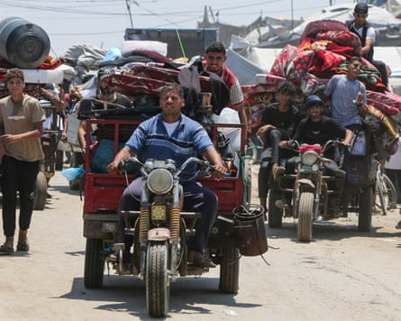

At least 15 people, including 10 children, have been killed by an Israeli strike as they queued outside a medical point in central Gaza, amid intensifying Israeli attacks that left 82 people dead across the strip.
The uptick in Israeli bombing came as negotiators said a Gaza ceasefire deal was in sight, but not yet achieved.
The strike on Thursday morning hit families waiting for nutritional supplements and medical treatment in front of a medical point in Deir al-Balah, medical sources said. Project Hope, which runs the facility, said operations at the clinic had been suspended until further notice.
“This morning, innocent families were mercilessly attacked as they stood in line waiting for the doors to open. This is a blatant violation of international humanitarian law,” said Rabih Torbay, the NGO’s chief executive.
The Israeli military said it had targeted a Hamas terrorist who had participated in the 7 October 2023 attack, but “regrets any harm to uninvolved individuals” and that the incident was under review.
“What was our fault? What was the fault of the children?” asked 35-year-old Mohammed Abu Ouda, who had been waiting for supplies when the strike happened. “I saw a mother hugging her child on the ground, both motionless – they were killed instantly.”
Israeli strikes and gunfire killed at least 67 other people across the Gaza Strip over the past 24 hours, according to the Palestinian health ministry, including 15 people in five separate strikes in Gaza City.
On Wednesday, Hamas agreed to release 10 hostages in exchange for a ceasefire and the US president, Donald Trump, expressed optimism for a ceasefire deal, saying there was a “very good chance” of a deal being reached this week or next.
Qatar, which is helping to mediate the indirect ceasefire talks, cautioned that a deal could take time, as there are still key stumbling blocks. Israel is demanding that it be allowed to resume military activity in Gaza after the ceasefire, while Hamas wants assurances that Israel will not restart fighting.
A previous ceasefire broke down in March after Israel decided to renew fighting instead of progressing to a second stage of the deal that could have led to a permanent end to the conflict. Israel has demanded the complete disarmament of Hamas and its departure from Gaza, something the militant group has refused.
Residents on Thursday reported Israeli tanks and bulldozers advancing towards encampments hosting displaced people south-west of Khan Younis, with Israeli soldiers opening fire and throwing teargas at the encampments. People began to flee the area amid the attacks, carrying mattresses and whatever belongings they could take with them amid scorching heat.
Nasser hospital in Khan Younis, one of the last functioning hospitals in southern Gaza, reported a large influx of wounded people over the past 24 hours. A picture sent by a member of the medical staff showed Israeli tanks stationed on the edge of tent encampments surrounding the hospital.
The staff member sent a video of a piece of twisted shrapnel that flew into the window of the intensive care unit from a nearby strike, which they said was still hot to the touch.
Displaced Palestinians flee Khan Younis amid an Israeli ground offensive.Photograph: Hatem Khaled/Reuters
On Tuesday, Hamas killed five Israeli soldiers, a rare deadly incident, after the militants targeted them with explosive devices in northern Gaza.
The war in Gaza started after Hamas-led militants killed more than 1,200 people on 7 October 2023, prompting retaliatory Israeli airstrikes. Israeli military operations have killed more than 57,000 people in Gaza and created famine-like conditions as the country restricts humanitarian aid into the territory.
More than 500 Palestinians have been shot dead by Israeli forces while trying to access food distribution sites run by the US- and Israeli-backed logistics group the Gaza Humanitarian Foundation. Israel backed the GHF after accusing Hamas of stealing aid under the UN aid system, something for which humanitarians say there is little evidence.
Aid groups have condemned the GHF, saying it could be complicit in war crimes and that it violates core principles of humanitarianism. The GHF said it had provided more than 69m meals and that other organisations “stand by helplessly as their aid is looted”.
At least three people were killed by Israeli gunfire while trying to access an distribution centre in Rafah, a civil defence official told AFP.
With Agence France-Presse